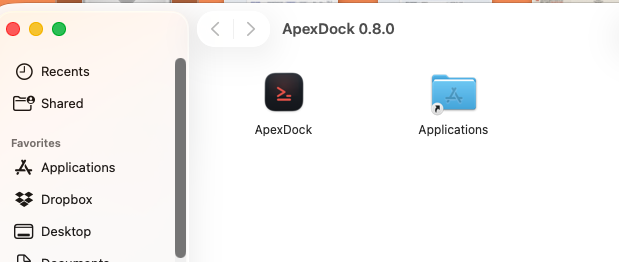
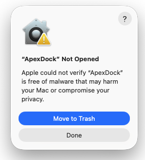
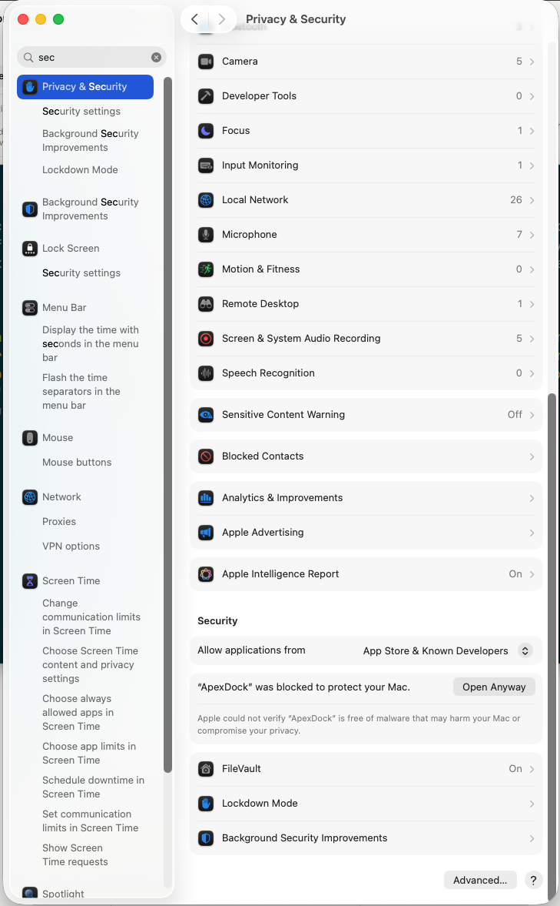
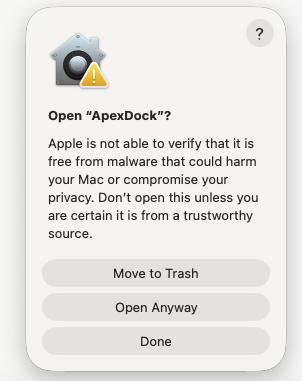
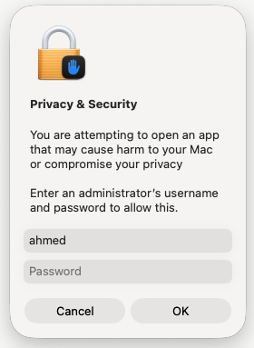

ApexDock keeps everything you launch a single click away — apps, shell scripts, dev servers, URLs and bookmarks — each with a live console so you can see exactly what every launch is doing, and a history of every run.
ApexDock is a native macOS app. Grab the latest build:
Requires macOS 14 (Sonoma) or later.
ApexDock isn't distributed through the App Store, so macOS will block the first launch until you approve it once. This is normal for a direct download — here's the full flow.
Double-click the downloaded ApexDock-0.8.0.dmg, then drag the ApexDock
icon onto the Applications folder.

Open ApexDock from Applications. macOS shows “ApexDock Not Opened.” This is Gatekeeper, not an error. Click Done — do not click “Move to Trash.”

Open System Settings → Privacy & Security, scroll to the Security section. You'll see “ApexDock was blocked to protect your Mac.” Click Open Anyway.

macOS asks once more — click Open Anyway.

Authorize with your administrator password. ApexDock opens — and it won't ask again; every future launch is a normal double-click.

Each tile is a launcher — an app to open, a shell command or script to run, or a URL to visit. Click Launch to run it. Click a tile to select it — the right-hand pane shows that launcher's live console and its run history, so you can see what happened (and why something failed) instead of guessing.
＋ Add form — it's the safe path. If you ever edit the
config file directly (~/Library/Application Support/ApexDock/launcher-items.yaml),
quit ApexDock first (it rewrites the file on quit) and keep every item's action: block.If you run ApexYard, the starter config adds three ready-made launchers so your daily workflow is one click each:
apexyard-premium setup wizard — pick and install premium skills in a few prompts.